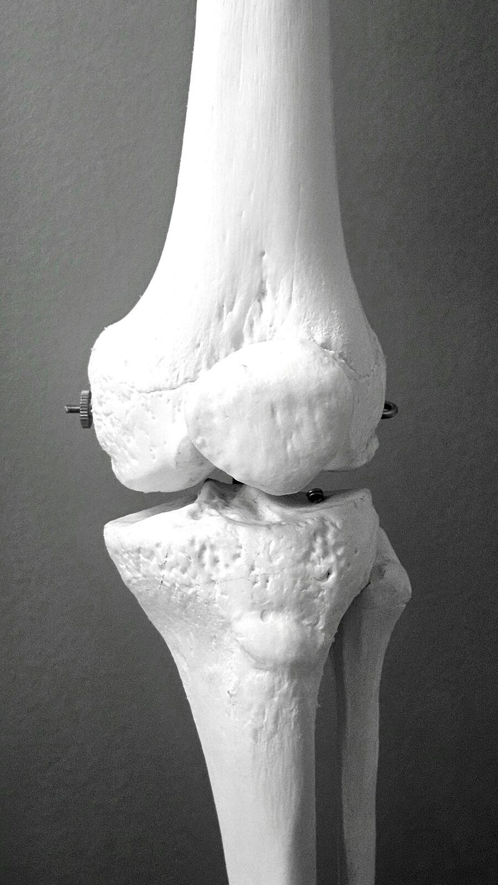

Traumatic Brain Injury Care
Our elite concierge nurses, chosen for their unwavering dedication, provide bespoke care that nurtures your well-being and honors your longevity with compassion and trusted expertise—specially tailored for the challenges of trauma-related injuries recovery.

Personalized Care, Personalized Solutions
We ensure every need is met with warmth and refined precision, offering world-class support to guide you through your trauma recovery journey with confidence.
Wound Care
Our compassionate nurses provide meticulous wound care for trauma-related injuries, ensuring proper cleaning and dressing to prevent infections. With expert attention, they promote healing and comfort, helping you recover with confidence.
Pain Management
Our caring team monitors and manages pain with tailored medication plans, coordinating with physicians to adjust dosages as needed. This trusted support enhances your well-being and dignity, offering peace of mind during recovery.
Physical Therapy Support
Our gentle nurses assist with personalized physical therapy exercises to restore mobility and strength, working closely with therapists. This bespoke approach fosters independence and safety, helping you regain confidence in daily movements.
Emotional Support
Our compassionate nurses offer trusting companionship to address the emotional challenges of trauma recovery, such as anxiety or post-traumatic stress. This caring support nurtures well-being and helps you feel valued and understood.
Medication Management
Our reliable nurses oversee medications for pain, inflammation, or infection prevention with meticulous care, ensuring proper dosing and monitoring for side effects. This expert support promotes health and longevity.
Care Coordination
Our dedicated nurses liaise with surgeons, physical therapists, and trauma specialists, ensuring seamless communication and adherence to recovery plans. This meticulous coordination supports your health and reduces family stress.
Safety Monitoring
Our trusted team creates a secure home environment, addressing risks like falls or mobility challenges common in trauma recovery. With unwavering attention, they ensure your safety and comfort, fostering confidence in your healing journey.
Daily Living Assistance
Our gentle nurses provide bespoke help with tasks like bathing, dressing, or meal preparation, tailored to your trauma-related needs. With respect and caring precision, they support your dignity and independence in a comfortable routine.
Your Trusted Partner in Trauma Recovery
Legacy Concierge is your trusted partner in trauma recovery care, offering compassionate support that feels like family. We know how challenging it is to recover from trauma-related injuries or support a loved one through this journey.
Our elite concierge nurses, among the best in the country, provide more than care—they offer compassionate, bespoke support that makes a difference. With expert skill and a caring heart, they tailor every detail to maximize your comfort, safety, and dignity.
Call for TBI Care Consultation
Let us create a personalized care plan to nurture your strength and bring you confidence during your trauma recovery journey.
Contact Us